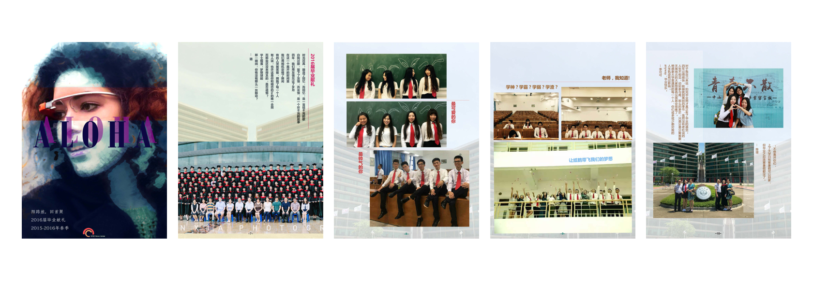
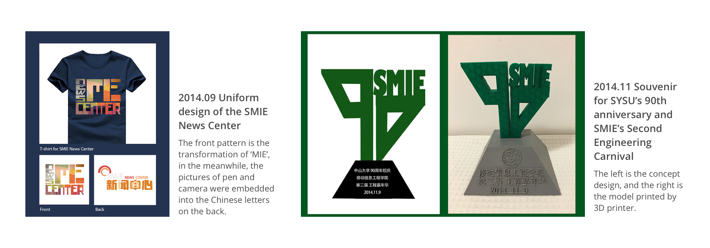

The project is an online digital platform, called “Memories of the Mediterranean,” aimed to help give voice and visibility to missing migrants. The project is in collaboration with La Terre Pour Tous, a migrant advocacy group based in Tunisia.
In college, I took part in establishing School of Mobile Information Engineering(SMIE) News Center which is one of the organizations directly affiliated to SMIE. It represents school, in the meanwhile, deepens students' understanding of school's development and provides a better channel of information delivery. I was the minister of Design Department for the first year, and was the vice president of the News Center the second year. I got the opportunity to practice my design skills, creativity, and leadership in the News Center.
The first electronic edition of SMIE's student journal -- ALOHA. I conducted and took part in the planning, content collection(arranging interviews with teachers and students, collecting articles and photos), design and evaluation.
